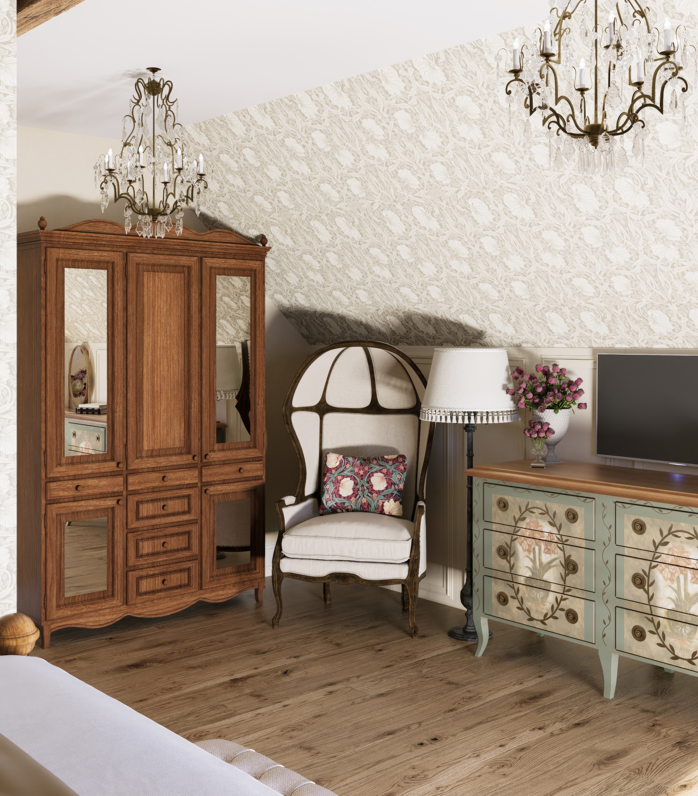
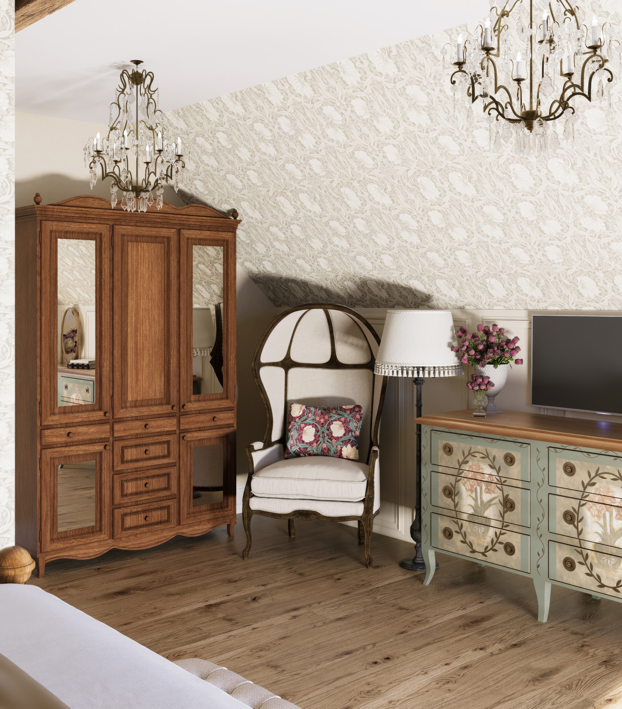
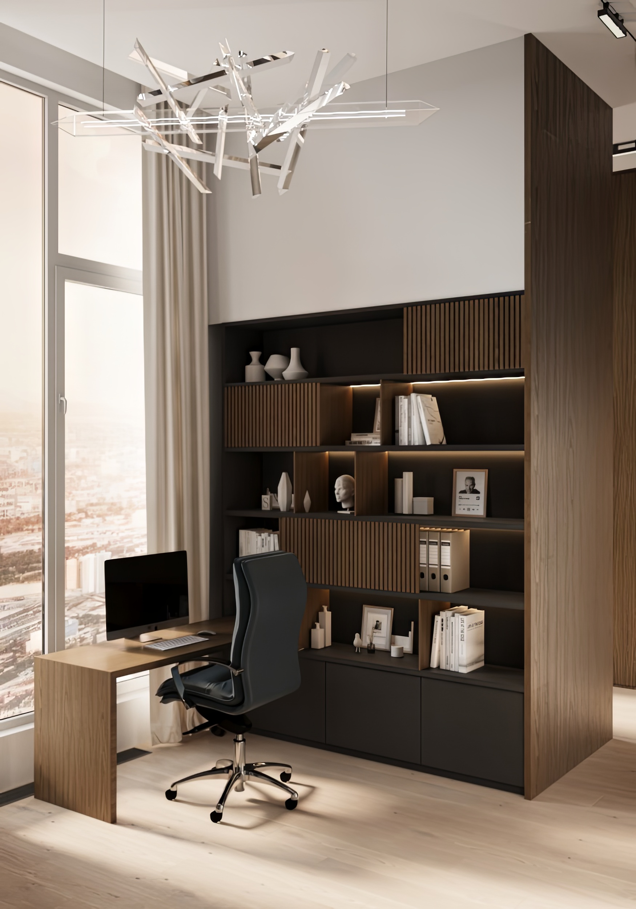

«Современная мягкость»
Лёгкий, европейский минимализм. Простой силуэт + внимание к уюту — проект для жизни, а не на показ. Выполнено по дизайну Валерии Макаровой для европейского застройщика.
«Солнечный прованс в Калининграде»
Тёплый прованс без клише — интерьер частного дома в Калининграде. Свет, дерево, рельеф и настроение, которое хочется сохранить. Проект дизайнера Марины Снигиревой.


 

Пространство на вырост
Квартира в Москве для девушки — будущего архитектора. Современное, просторное, с характером. Свет, глубина и честные материалы. Проект по дизайну Екатерины Камбаровой.


Тепло в деталях
Интерьер зоны отдыха, созданный в рамках проекта «Современная мягкость». Здесь больше личного: тактильность, полумрак, дерево и ощущение укрытости. Проект по дизайну Валерии Макаровой.


Атмосфера под заказ
Интерьер, созданный для рекламной кампании мебельной компании. По запросу заказчика разработан дизайн сцены: стилистика, композиция, освещение и настроение. Проект, где каждый элемент работает на образ и задачу бренда.

Тихий домик
Проект визуализации гостевого дома в Латвии. Спокойная архитектура, свет и натуральные материалы — всё, чтобы в этом пространстве хотелось остаться. Реализуется по дизайну Валерии Макаровой.

Классика в деталях
Визуализация дизайн-проекта квартиры в Санкт-Петербурге. Небольшое пространство объединило в себе кухню-гостиную и зону для подростка — с любовью к классике и вниманием к каждому метру. Проект вдохновлён идеями дизайнера Евы Любимовой. Авторская проработка моделей мебели и композиции.